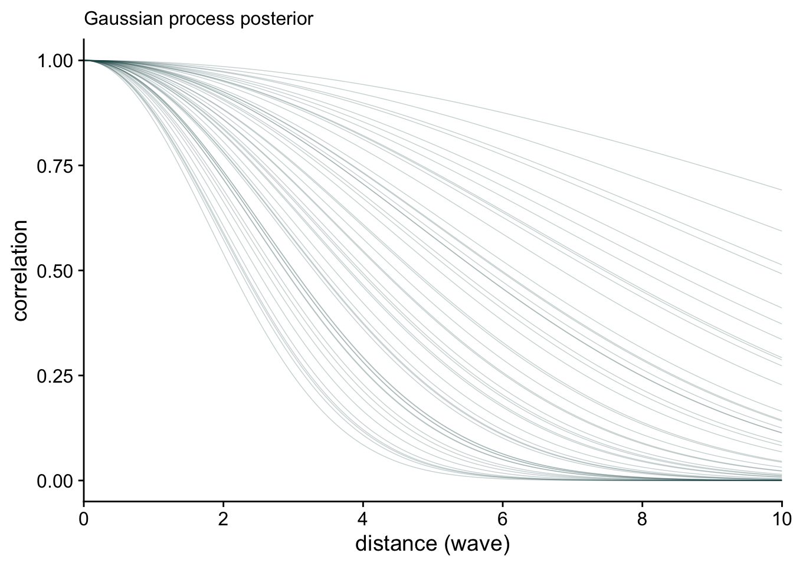
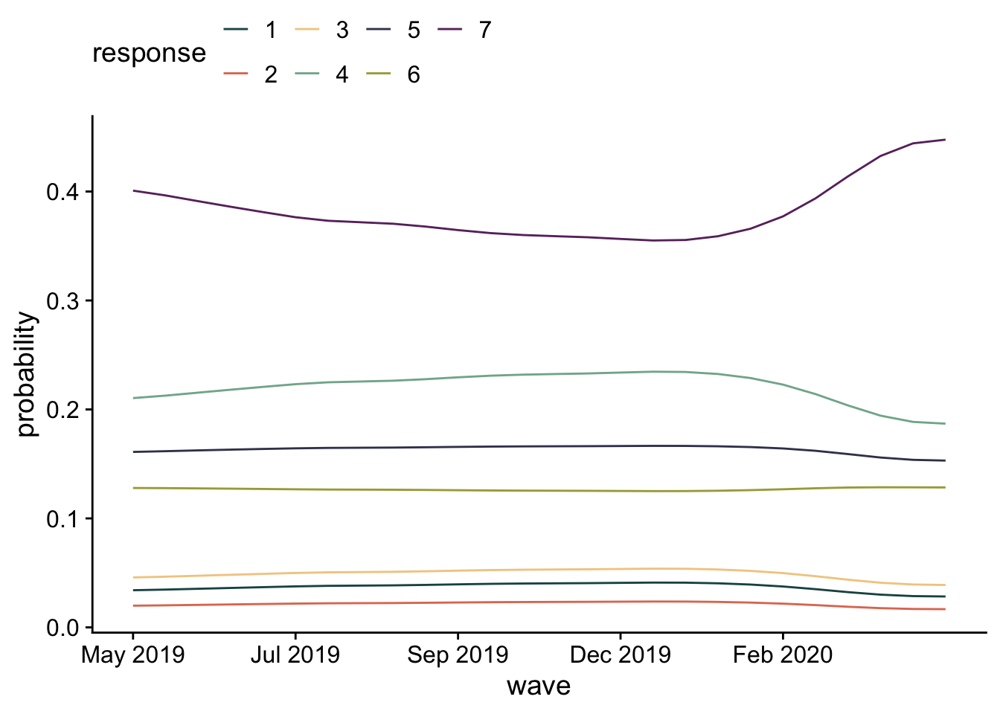
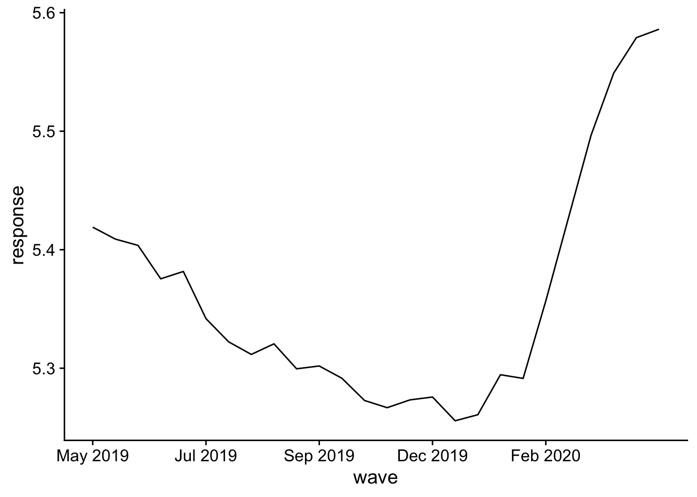
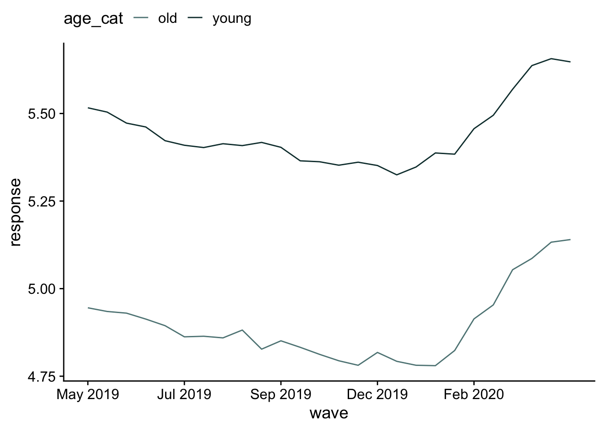

library(tidyverse)
library(psych)
library(cowplot)
library(patchwork)
library(here)
library(brms)
library(tidybayes)
library(invgamma)
theme_set(theme_cowplot())
default_palettes <- list(
c("#5e8485" , "#0f393a") ,
c("#1c5253" , "#5e8485" , "#0f393a") ,
# palette with 5 colours
c( "#1c5253" , "#e07a5f", "#f2cc8f" , "#81b29a" , "#3d405b" ) ,
# same palette interpolated to 8 colours
c( "#1c5253" , "#e07a5f", "#f2cc8f" , "#81b29a" , "#3d405b" , "#a7a844" , "#69306d" )
)
options(ggplot2.discrete.fill = default_palettes,
ggplot2.discrete.colour = default_palettes)Problem set 9
Due by 11:59 PM on Monday, June 2, 2025
Instructions
Please use an RMarkdown file to complete this assignment. Make sure you reserve code chunks for code and write out any interpretations or explainations outside of code chunks. Submit the knitted PDF file containing your code and written answers on Canvas.
Questions
- For this question, use the data from the study of political attitudes discussed in class. Download the csv file here. You can see the description of the data here). Consider the question about healthcare (
health): Should federal spending on healthcare be increased, decreased, or kept the same?. Model reponses to this variable as a function of wave, using a Gaussian process. Remember that you’ll need to clean the data first. Plot the expected response as a function of wave.
Click to see the answer
d <- read_csv(here("files/data/external_data/yllanon.csv")) Rows: 10935 Columns: 51
── Column specification ────────────────────────────────────────────────────────
Delimiter: ","
chr (3): ResponseId, voting, id
dbl (46): Duration (in seconds), def, crime, terror, poor, health, econ, ab...
dttm (2): StartDate, EndDate
ℹ Use `spec()` to retrieve the full column specification for this data.
ℹ Specify the column types or set `show_col_types = FALSE` to quiet this message.d = filter(d, health <= 7)m1 <- brm(
data = d,
family = cumulative,
health ~ 1 + gp(wave, cov = "exp_quad", scale = F),
prior = c( prior(normal(0, 1.5), class=Intercept),
prior(inv_gamma(2.5, 3), class=lscale, coef = gpwave),
prior(exponential(1), class=sdgp, coef = gpwave)),
iter=5000, warmup=1000, seed=3, cores=4,
file = here("files/models/hw9.1")
)Here’s the posterior distribution for the relationship between wave and response.
post <- as_draws_df(m1)
post %>%
mutate(sigsq = sdgp_gpwave^2,
rhosq = 1 / (2 * lscale_gpwave^2)) %>%
slice_sample(n = 50) %>%
expand_grid(x = seq(from = 0, to = 10, by = .05)) %>%
mutate(covariance = sigsq * exp(-rhosq * x^2),
correlation = exp(-rhosq * x^2)) %>%
# plot
ggplot(aes(x = x, y = correlation)) +
geom_line(aes(group = .draw),
linewidth = 1/4, alpha = 1/4, color = "#1c5253") +
stat_function(fun = function(x)
exp(-(1 / (2 * mean(post$lscale_a_gpwave)^2)) * x^2),
color = "#0f393a", linewidth = 1) +
scale_x_continuous("distance (wave)", expand = c(0, 0),
breaks = 0:5 * 2) +
labs(subtitle = "Gaussian process posterior")Warning: Unknown or uninitialised column: `lscale_a_gpwave`.Warning in mean.default(post$lscale_a_gpwave): argument is not numeric or
logical: returning NAWarning: Removed 101 rows containing missing values or values outside the scale range
(`geom_function()`).
I’d like to look at responses as a function of wave. Because this is a categorical model, I can do this two ways. First, I’ll look at the likelihood of each response across time. Then, I’ll estimate the average response and plot that across time.
nd = distinct(d, wave)
epred_m1 = nd |>
add_epred_draws(m1)
## find dates associated with waves
dates = d |>
group_by(wave) |>
summarise(date = mean(StartDate)) |>
mutate(
date = as_date(date),
ym = format(date, "%b %Y"))
epred_m1 |>
with_groups(c(wave, .category), mean_qi, .epred) |>
ggplot(aes(x = wave, y= .epred, color = .category)) +
geom_line() +
labs(x = "wave", y="probability", color = "response") +
scale_x_continuous(
breaks = seq(1, 25, by=5),
labels = dates$ym[seq(1, 25, by=5)]
) +
theme(legend.position = "top")
These responses are pretty stable, with participants more likely to say higher values (increase spending on health).
pred_m1 = nd |>
add_predicted_draws(m1)
pred_m1 |>
mutate(.prediction = as.numeric(.prediction)) |>
with_groups(wave, mean_qi, .prediction) |>
ggplot(aes(x = wave, y= .prediction)) +
geom_line() +
labs(x = "wave", y="response") +
scale_x_continuous(
breaks = seq(1, 25, by=5),
labels = dates$ym[seq(1, 25, by=5)]
) +
theme(legend.position = "top")
There’s a clear jump in positive responses later in the study. Hmm, what happened there?
Click to see the answer
- Categorize each participant as either “young” or “old” using whatever cut-off you want for old (but being sensitive to the feelings of your instructor). Incorporate this variable into your model. How does it change your interpretation of the findings? (An important note: age is only assessed at baseline.)
First we have to categorize each participant by their age. I’m going to start by filling age in from baseline to the rest of the waves.
d <- d |>
arrange(wave) |>
with_groups(id, fill, age, .direction = "down") |>
filter(!is.na(age))Now I’ll categorize everyone.
d = d |>
mutate(age_cat = ifelse(age > 55, "old", "young"))m2 <- brm(
data = d,
family = cumulative,
health ~ 1 + age_cat + gp(wave, cov = "exp_quad", scale = F),
prior = c( prior(normal(0, 1.5), class=Intercept),
prior(normal(0, 1), class=b),
prior(inv_gamma(2.5, 3), class=lscale, coef = gpwave),
prior(exponential(1), class=sdgp, coef = gpwave)),
iter=5000, warmup=1000, seed=3, cores=4,
file = here("files/models/hw9.2")
)m2Warning: Parts of the model have not converged (some Rhats are > 1.05). Be
careful when analysing the results! We recommend running more iterations and/or
setting stronger priors.Warning: There were 1451 divergent transitions after warmup. Increasing
adapt_delta above 0.8 may help. See
http://mc-stan.org/misc/warnings.html#divergent-transitions-after-warmup Family: cumulative
Links: mu = logit; disc = identity
Formula: health ~ 1 + age_cat + gp(wave, cov = "exp_quad", scale = F)
Data: d (Number of observations: 10350)
Draws: 4 chains, each with iter = 5000; warmup = 1000; thin = 1;
total post-warmup draws = 16000
Gaussian Process Hyperparameters:
Estimate Est.Error l-95% CI u-95% CI Rhat Bulk_ESS Tail_ESS
sdgp(gpwave) 0.32 0.32 0.08 1.25 1.14 20 15
lscale(gpwave) 5.13 3.12 1.43 13.11 1.03 204 1524
Regression Coefficients:
Estimate Est.Error l-95% CI u-95% CI Rhat Bulk_ESS Tail_ESS
Intercept[1] -2.59 0.44 -3.01 -1.22 1.14 19 16
Intercept[2] -2.11 0.45 -2.52 -0.73 1.14 19 16
Intercept[3] -1.45 0.43 -1.86 -0.12 1.14 19 16
Intercept[4] -0.08 0.43 -0.48 1.26 1.14 19 16
Intercept[5] 0.62 0.43 0.21 1.95 1.14 19 17
Intercept[6] 1.14 0.44 0.73 2.50 1.14 19 17
age_catyoung 0.59 0.05 0.49 0.70 1.01 1717 10364
Further Distributional Parameters:
Estimate Est.Error l-95% CI u-95% CI Rhat Bulk_ESS Tail_ESS
disc 1.00 0.00 1.00 1.00 NA NA NA
Draws were sampled using sampling(NUTS). For each parameter, Bulk_ESS
and Tail_ESS are effective sample size measures, and Rhat is the potential
scale reduction factor on split chains (at convergence, Rhat = 1).Age definitely has an effect. Let’s visualize.
nd = distinct(d, age_cat, wave)
pred_m2 = nd |>
add_predicted_draws(m2)
pred_m2 |>
mutate(.prediction = as.numeric(.prediction)) |>
with_groups(c(wave, age_cat), mean_qi, .prediction) |>
ggplot(aes(x = wave, y= .prediction, color=age_cat)) +
geom_line() +
labs(x = "wave", y="response") +
scale_x_continuous(
breaks = seq(1, 25, by=5),
labels = dates$ym[seq(1, 25, by=5)]
) +
theme(legend.position = "top")
Young people select responses more on the “increase” side of the scale than the decrease.